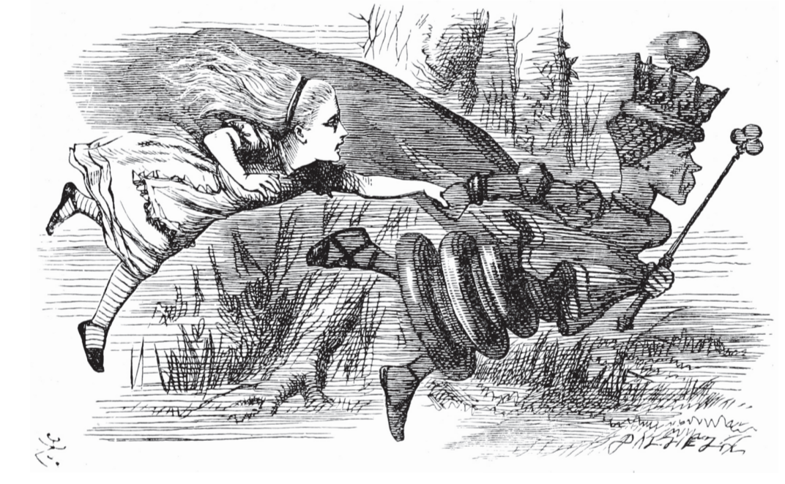
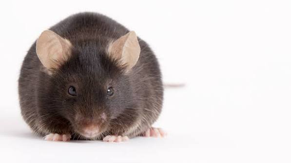

Innate Immunity · Host–Pathogen Interactions · Cell Death
The Miao Lab studies environmental bacteria with latent pathogenic potential — organisms that have not adapted to evade mammalian immunity. Because these “pathogens” are normally cleared before they ever cause disease, they make unusually sensitive experimental tools, revealing aspects of innate immunity that conventional pathogens leave hidden. By combining in vivo knockout models with state-of-the-art microscopy and molecular and biochemical assays, we use these environmental microbes to dissect how the innate immune system senses and eliminates infection.
The Red Queen's Race — and the Red Pawn Demotion
“ Now, here, you see, it takes all the running you can do, to keep in the same place.”
— the Red Queen
Evolution never stops: hosts and pathogens lock into a Red Queen's race, each innovation in immune defense selected against by a countering virulence factor, and the host–pathogen interface remains in uneasy balance.


Knockout Mice Strains
We rely on a toolkit of genetically inbred knockout (KO) mouse strains, each missing gene or genes — e.g. Ccr2−/−, Casp8−/−, Ifng−/−, etc.
Wild-type (WT) mice are immunocompetent, much like a healthy person: they clear our environmental pathogens without ever falling ill, while nockout mice model innate immunodeficiency.